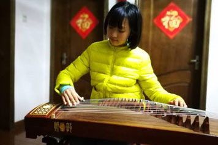
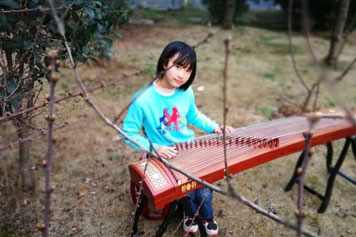

学习古筝
 
小时候,听妈妈说,古筝的声音很典雅,听着古筝发出的悠扬的音韵,简直就是一种享受.从此,古筝一词深深印入我无知的脑海中.渐渐地,听多了,想多了,我对古筝有了种好奇感,于是,学习古筝的艰辛旅程也就开始了。
刚开始学古筝，给我的第一印象就是：酸。
这天，是我的第一堂古筝课，一进门，一阵阵清脆的琴声萦绕耳边。终于，轮到我上课了，我既兴奋又紧张。这节课，老师教我认弦，幼小的我望着古筝上的二十一条弦，顿时傻了眼，二十一条弦，每条弦都发不同的音啊！我的小脑袋又不是电脑，这该怎么办呢？放弃？不，绝对不可能！皎皎的月光升上天空，星星在旁边点缀，在宁静的夜晚，一间房子里断断续续的传来一个音，两个音……灯光下，我坐在琴边，仔细地记着每条弦的音调，心里不禁有种酸酸的感觉。
几年后，我的琴技有了很大的进步，可练琴的日子却不免有些：苦。
在屋子里传来的不再是断断续续的几个音了，一首首优美的歌曲从我的手指里飞出，但困难却是层层叠叠。那天,老师教了我一首曲,是我特别喜欢的,我在网上听人家弹得可好听,回到家第一时间按老师说的去弹,可出来的声音总觉得怪怪的,听着特别扭,我一次一次的弹着,却始终弹不出效果，我愤怒之余更感到委屈，手指都练红了，变成了一个个红萝卜，生疼生疼的。不过，再疼再苦，我也不放弃……
"啪啪啪，啪啪啪……"随着热烈的掌声，我穿着珍珠白的刺绣旗袍，在大家那羡慕的眼神下领过古筝比赛的奖杯，爸爸妈妈向我伸出了大拇指，这种甜蜜的滋味在我的心中开始蔓延……
也许是三生有幸，前世的插肩而过换来今生的相伴。对古筝情有独钟，平时看到影像店里卖古筝碟片也会毫不犹豫的买下，心情烦躁时或学习之余总是喜欢听古筝音乐或者自己弹奏一曲，，随之心情也变的明朗、快乐，这都是古筝的魅力所在——心灵的净化曲!
如今，古筝与我的灵魂融为一体，听音乐成了一种习惯，练琴成为一种享受。
古筝的构造与发声
古筝，由哪些部位组成？各部位名称是什么？它的发声原理是什么？在演奏古筝时，怎样的演奏姿势是科学、合理的？带着这样的问题我想去了解研究古筝的构造、古筝的发声原理，以及古筝演奏的姿势。
古筝的构造按照物理学的观点来说，古筝的结构与形状就是一个能发出音乐声音的木质共鸣箱。它长方形的拱形面板与平直的底板一般采用质地比较松软的、吸水性比较强的桐木制成，侧板的内壁它呢是采用白松，外壁采用红木镶贴。琴身的侧板的高度为60毫米左右，长度为163厘米左右。

古筝的发声：
下面我们讲古筝的发声。古筝是弹拨乐器，它用手指拨弹琴弦引发琴弦的振动产生声音。振动的琴弦通过琴码（琴柱）与音柱把振动传达到共鸣箱的面板，面板振动再引起共鸣箱腔内的空气振动，而空气的振动又通过底板的振动及反射加强了腔内空气与面板的振动。由多次振动被扩大了的古筝声音，又同时从底板的音孔传出来。
演奏姿势：
筝的演奏姿势历来分为立势和坐势两种。1950年后，21弦筝改良成功被普遍使用。因它的体形较大，人们一般都把筝置于为它定身而做的低于人体腰部的古筝架上坐着演奏。近年来，民乐演奏在一部分搞流行音乐的年轻人中兴起了边弹奏、边扭动的流行风格。为适应这种时尚的需要，在少数年轻的古筝演奏工作者中又出现了站着演奏古筝的姿势。

一、坐在椅子或凳子上演奏，椅、凳的高度选择因人而异，高度一般能使演奏者两腿自然弯曲成90度时，大腿低于筝背板3cm为宜；身躯要坐直，但不能挺胸，要含胸拔背使身体呈松软状态，以利演奏者在演奏时力与呼吸能畅通流动；两膝间距为18cm；左脚稍前于右脚，两脚成“丁字形”踏在地上；为便于身体的摆动，右脚后跟的部位需要稍稍翘起；筝横放在筝架（或筝桌）上，前岳山在演奏者的右侧；眼睛向前自然平视乐谱；面部表情要自然。

三、演奏曲情曲意要求宽广雄伟、气势澎湃的曲目时，人体坐的椅子应与筝身呈平行状的位置，使人体正面着筝体。正面坐着的身体便于两肩向二侧打开，上胸部的含气比较充盈，比较能呈现曲目要求的阳刚气质与激情四射的演奏姿态。
演奏曲情曲意比较委婉、柔和的曲目时，坐椅位置可以考虑在人体左肩的一边稍往后侧一些，便于人体选用向左角度侧身坐的演奏姿态。

1、 从视觉艺术看，人体站立时展现出3/4侧身部位的角度最美丽。
2、 侧身坐的右手由高音向低音音位移动的轨迹是向左方向伸展，这正符合21根弦八分之一的弹弦点位置。
3、 侧身坐的姿势，使人体两肩自然向中部的躯干靠拢，利于与气在肢体中自然流动。
古筝等级考试证书